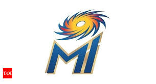

MUMBAI INDIANS

The Mumbai Indians are a franchise cricket team based in the city of Mumbai, Maharashtra, that play in the
Indian Premier League (IPL).
Founded in 2008, the team is owned by India's biggest conglomerate, Reliance Industries, through its 100%
subsidiary IndiaWin Sports. Since its establishment, the team has played its home matches in the
33,108-capacity Wankhede Stadium in Mumbai.
In 2017, the Mumbai Indians became the first franchise to cross the $100 million mark in brand value among
the IPL franchises. The brand value of Mumbai Indians, in 2019, is estimated to be around ₹809 crore
(roughly $115 million), the highest among all the IPL franchises for the fourth consecutive year.
Mumbai Indians is the most successful team in the IPL. They won the 2011 Champions League Twenty20 after
beating Royal Challengers Bangalore by 31 runs in the final. The team won the double by winning its first
IPL title, in 2013, by defeating Chennai Super Kings by 23 runs in the final, and then defeated the
Rajasthan Royals by 33 runs to win its second Champions League Twenty20 title later that year. They
won their second IPL title on 24 May 2015 by defeating the Chennai Super Kings by 41 runs in the final and
became the third team to win more than one IPL title. On 21 May 2017, they won their third IPL title by
defeating the Rising Pune Supergiant by 1 run in a thrilling final, thus becoming the first team to win
three IPL titles. While playing the tournament, they won their 100th T20, becoming the first team to do
so. In 2019, they repeated the same feat as they won a record breaking fourth IPL title, by beating CSK by
just 1 run on 12 May 2019 in IPL Final.
Mumbai Indians are currently captained by Rohit Sharma. Mahela Jayawardene was appointed as head coach of
Mumbai Indians before the 2017 season. Sharma is the leading run scorer of the team while Lasith Malinga
is the leading wicket taker of the team and the IPL as well.
CAPTAIN
Rohit Gurunath Sharma (born 30 April 1987) is an Indian international cricketer who plays for Mumbai in
domestic cricket and captains Mumbai Indians in the Indian Premier League as a right-handed batsman and an
occasional right-arm off break bowler. He is the vice-captain of the Indian national team in limited-overs
formats.
Outside cricket, Sharma is an active supporter of animal welfare campaigns. He is the official Rhino
Ambassador for WWF-India and is a member of People for the Ethical Treatment of Animals (PETA). He has
worked with PETA in its campaign to raise awareness of the plight of homeless cats and dogs in India.
Sharma has been one of the most successful players in the Indian Premier League (IPL) as captain since 2013
of the Mumbai Indians, who have won the tournament four times under his leadership. He is currently
(July 2019) one of ten players who have scored 4,000 career runs in the competition. Sharma has 4,898 with
one century and is the third highest run scorer after Virat Kohli and Suresh Raina.
Sharma joined the IPL in 2008 when he was signed by the Deccan Chargers franchise, based in Hyderabad, for
the sum of US$750,000 a year. In the 2011 auction, he was sold for US$2 million to the Mumbai
Indians. He scored his only IPL century in the 2012 tournament with 109 (not out) against the Kolkata
Knight Riders. Under his leadership, Mumbai have won the IPL in 2013, 2015, 2017 and 2019; they also won
the former Champions League Twenty20 competition in 2013.